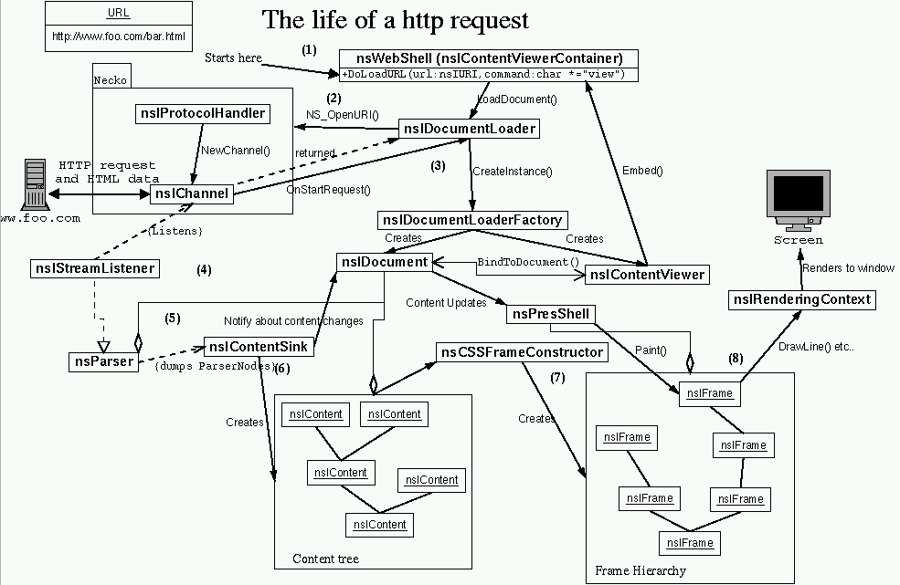

The Life Of An HTML HTTP Request
Alexander Larsson <alex@cendio.se>
(1) The loading of the url is started in nsWebShell::DoLoadURL (called from some LoadURL or LoadURI variant in the webshell). The webshell then tells it's DocumentLoader to load (command "view") the specified url. [note: Passes nsWebShell.mObserver as nsIStreamObserver and the webshell as nsIContentViewerContainer to the DocLoader.]
(2) The Document Loader calls NS_OpenURI with the url to begin transfering the requested file. Necko (the network library) checks the url scheme (the first part of the url, http: in this case) and locates the correct nsIProtocolHandler (in this case nsHTTPHandler) and asks it for a nsIChannel (nsHTTPChannel). The channel represents the connection to the server, and is the source of the html data stream.
(3) When data is starting to come from the webserver the nsIChannel calls the OnStartRequest in the DocumenLoader. Now the channel knows the content type of the incoming data, so the DocumentLoader can find an nsIDocumentLoaderFactory for the "text/html" content type (in this case an nsLayoutDLF). This factory is then told to create a nsIContentViewer. The factory creates a ContentViewer. In most cases (including this) it also creates a nsIDocument (nsHTMLDocument) and binds it to the ContentViewer (nsIDocumentViewer in that case). The ContentViewer is then Embed():ed into the ContentViewerContainer (the WebShell).
(4) The document then creates a nsIParser for parsing the input stream. For HTML document this is an nsParser, which also implements nsIStreamListener. This StreamListener is returned to the DocumentLoader and connected to the nsIChannel of the request.
(5) The Document (nsHTMLDocument) also creates a nsIContentSink (nsHTMLContentSink) and connects it to the parser and the document. The parser then parses the stream it gets via it's StreamListener interface and converts it to nsIParserNodes which it places in the ContentSink.
The parser typically gets data from the stream in 8kb blocks and parses these blocks, block by block. After every parsed block it passes the parsed data as nsIParserNodes to the ContentSink unless the parser has been temporarily blocked, in wich case it waits until it gets unblocked before parsing the cached data it has receieved while being blocked.
(6) The contentsink then builds up nsIContent nodes that describe the document. These content nodes are created by calling functions like NS_NewHTMLXxxxElement(). These element nodes implement the nsIHTMLContent interface as well as their respective DOM interfaces. nsIContent::AppendChild() is used to build the content tree but AppendChild takes a "aNotify" argument that marks if it should notify the document about the content model changes or not. This argument is always PR_FALSE when the content sink calls AppendChild. The content sink tells the document about content model changes (NotifyBody()) in places like nsHTMLContentSink::WillInterrupt() and nsHTMLContentSink::DidBuildModel(). WillInterrup is called by the parser between every 8kb block of data (unless the parser is temporarily blocked).
(7) Since the presentation shell (nsPresShell) has registred as an DocumentObserver with the nsIDocument it also gets notified of changes in the Document/Content tree. This is used to create and update the nsIFrame hierarchy. This is done by the nsCSSFrameConstructor, which creates frames for each Content node according to the rules specified in the user agent stylesheet (ua.css) and the document specific style sheets. Each Content node corresponds to one or more nsIFrame, except content with displaytype "none". If there are several frames created from a content node, then the first of these are called the "primary" node, and the following frames can be found by using the GetNextInFlow() method of nsIFrame. The initial reflow is done by the nsHTMLContentSink::StartLayout(), StartLayout() calls PresShell::InitialReflow(). StartLayout is called quite early in the parsing process, for HTML it's called in nsHTMLContentSink::OpenBody() (among other places).
TODO: How are nsIFrames reflowed after a change when they already exist?
(8) Each nsIFrame knows how how to draw itself on the screen. When the PresShell [Note: not true, who really does the call?] has layouted (reflowed) the frames it calls nsIFrame::Paint() method of all frames. These get passed references to the presentation context and a rendering context to do the drawing on. The rendering context implementation is a native class (nsGtkRenderingContext on unix) that knows how to draw in a window.
TODO: Views, ViewManager, EventStateManager?